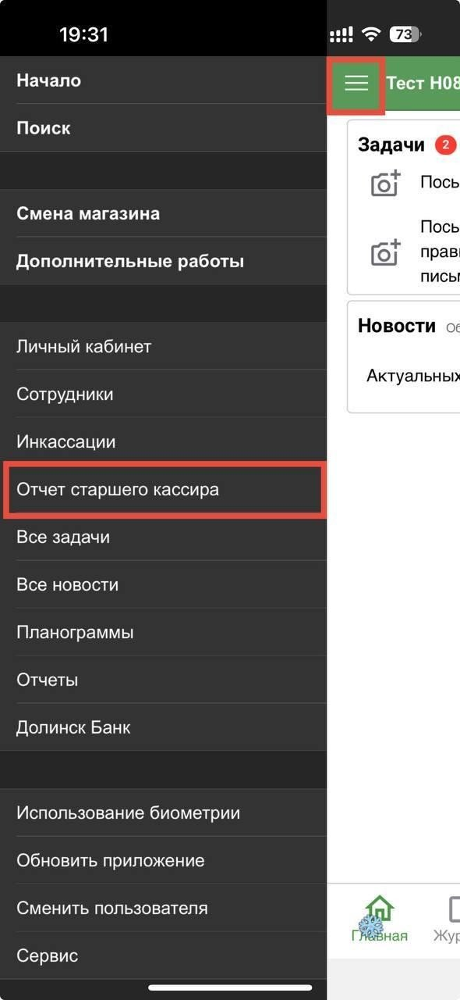
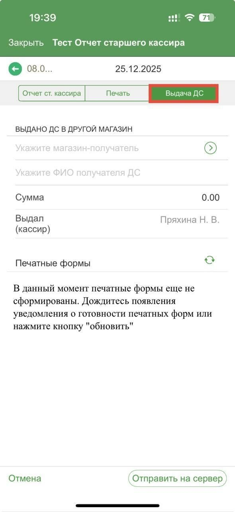
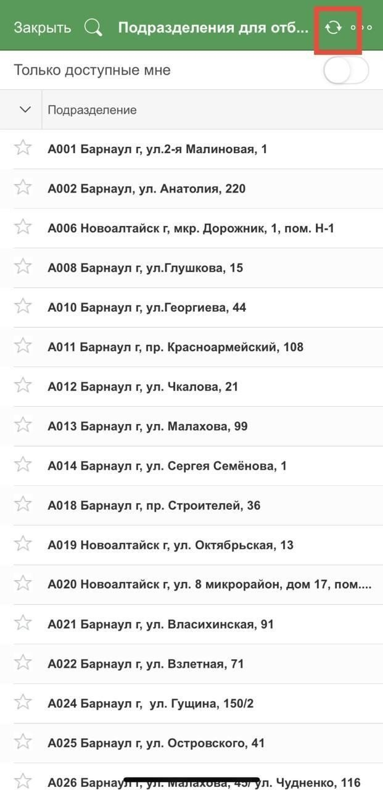
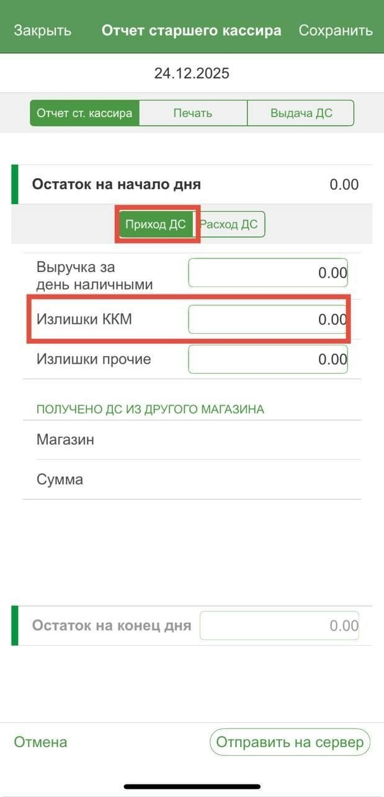
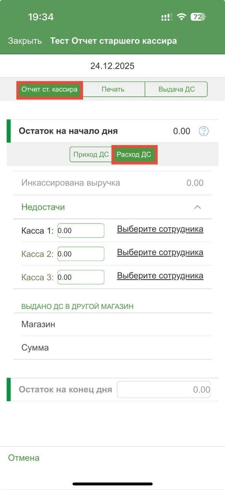
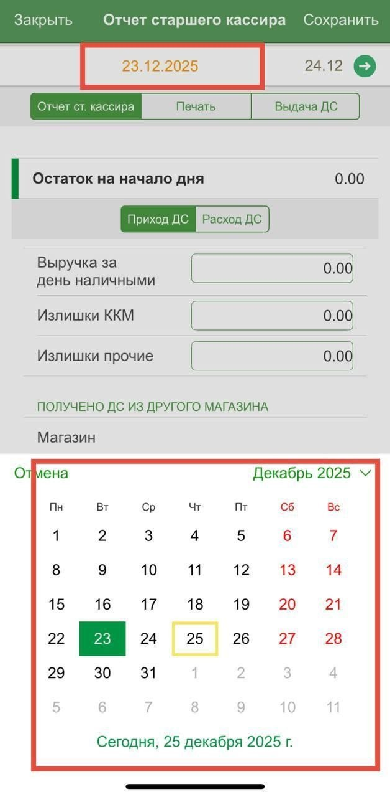
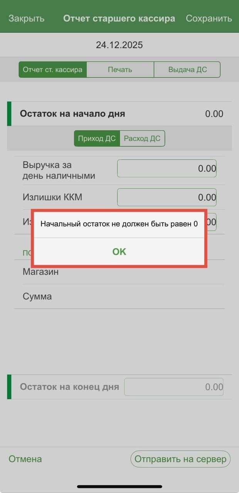

Размен: передача денег из магазина в магазин
Как оформить размен для нового магазина в «Ярче Коммуникациях»: что делает магазин, который отдаёт деньги, и что — новый магазин. Собрано из инструкции ИС Ярче «Ярче Коммуникации» (раздел «Отчёт старшего кассира», стр. 85–94) и «Кассовой дисциплины» (стр. 33). Красной рамкой на картинках — что нажать.
Кто что делает
1. Договоритьсяот даты открытия посчитайте, когда в ближайший действующий магазин приходит последний размен, и свяжитесь с его директором. Он заказывает размен для нового ОСП и сообщает бухгалтеру по кассе дату превышения лимита и на какое ОСП заказан размен
2. Отдающий магазинв ЯК: «Отчёт старшего кассира» → вкладка «Выдача ДС»: магазин-получатель, ФИО получателя, сумма → «Отправить на сервер». Печатает РКО
3. Новый магазинпринимает деньги, оформляет ПКО. В его отчёте старшего кассира сумма сама встанет в «Получено ДС из другого магазина»
ВСЕ ПЕРЕДАЧИ — ЧЕРЕЗ ЯК, ДЕНЬ В ДЕНЬ
Документ «Выдача ДС» оформляется в тот же день, когда деньги физически переданы. Без доступа к кассе новый магазин ничего не оформит — заявку в ЯК на доступ к кассе подаём заранее, в день заказа размена, печати и доверенности.
Документ «Выдача ДС» оформляется в тот же день, когда деньги физически переданы. Без доступа к кассе новый магазин ничего не оформит — заявку в ЯК на доступ к кассе подаём заранее, в день заказа размена, печати и доверенности.
1. Магазин, который отдаёт: «Выдача ДС»
- В ЯК откройте меню ☰ и выберите «Отчёт старшего кассира».
- Перейдите на вкладку «Выдача ДС».


- Магазин-получатель — выберите новый магазин из списка своего региона.
Список пустой или нового магазина нет? Нажмите кнопку «Обновить/Загрузить» (стрелки вверху справа) — список подразделений загрузится заново.

- ФИО получателя ДС — сотрудник нового магазина, который принял деньги.
- Сумма — сколько передали.
- Выдал (кассир) заполнится сам — тот, кто создаёт документ.
- Нажмите «Отправить на сервер». После предупреждения документ больше не редактируется — проверьте всё до отправки.
- Печатные формы (РКО) — на этой же вкладке. Если пишет «ещё не сформированы» — подождите уведомления или нажмите «обновить».
В отчёте старшего кассира отдающего магазина сумма сама попадёт в строку «Выдано ДС в другой магазин» на вкладке «Расход ДС».
2. Новый магазин: приём денег
- Пересчитайте деньги при передающем, оформите ПКО.
- В отчёте старшего кассира за этот день, вкладка «Приход ДС», блок «Получено ДС из другого магазина» — магазин и сумма заполнятся автоматически по «Выдаче ДС» отдающего магазина. Руками это поле не правится.

Не появилось — значит отдающий магазин ещё не отправил «Выдачу ДС» на сервер или выбрал не тот магазин. Звоните его директору.
Дни инкассации и размена для нового магазина — у Елены Бадеевой.
3. Первый отчёт старшего кассира
Отчёт делается каждый день за вчерашний день, строго до 15:00. Можно создать за 3 прошлых дня, начиная со вчерашнего; за сегодня и будущие даты — нельзя.


Открытие нового магазина: в первом отчёте вместо 0,00 ставим 0,01. «Остаток на начало дня» и «Выручка за день наличными» в первый раз равны 0,00 — укажите вручную 0,01 руб., иначе ЯК не даст сохранить: «Начальный остаток не должен быть равен 0».

Выручка наличными не совпала с суммой Z-отчётов — сообщите по телефону 8-800-250-39-40 и исправьте сумму в отчёте.
Короткий чек-лист
- Доступ к кассе в ЯК есть у директора нового магазина (заявка — в день заказа размена).
- Договорились с директором ближайшего магазина, он заказал размен и предупредил бухгалтера по кассе.
- Отдающий магазин: «Выдача ДС» → получатель, ФИО, сумма → «Отправить на сервер», РКО.
- Новый магазин: ПКО; в отчёте старшего кассира — «Получено ДС из другого магазина».
- Первый отчёт: 0,01 вместо 0,00. Дальше — каждый день до 15:00.
Исходные документы
Инструкция ИС Ярче «Ярче Коммуникации», стр. 85–94